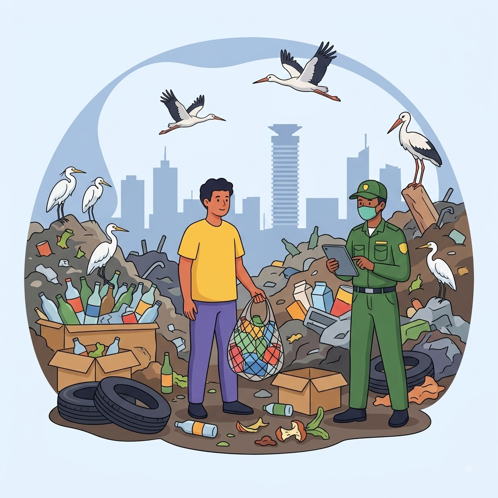

Why this matters
Nairobi generates over 2,400 tons of solid waste daily, leaving more than 1,300 tons uncollected in illegal dumpsites and waterways.
The tool
Your feature goes here. You will build this on Day 4.
Across high-density Nairobi estates (such as Eastlands, Kibera, Mathare, Mukuru, and Kasarani), secondary day-school students (Forms 1–4, ages 13–18)
commuting on foot encounter pervasive illegal open dumpsites, unmanaged plastic litter, and waste-clogged drainage culverts along their daily pedestrian routes (
ResearchGate, 2025). Because municipal waste management systems leave over 1,300 tons of solid waste uncollected daily (~500 tons of which is plastic) and existing
government or commercial recycling platforms lack hyper-local, low-bandwidth visibility into neighborhood collection schedules, micro-sorting guides, or plastic
buy-back points (UNEP & NEMA, 2021; CET, 2025), students and households lack actionable channels for waste recovery. Lacking disposal alternatives, residents
routinely resort to burning trash along walkways—exposing commuting students to toxic PM2.5 particulates that contribute to chronic respiratory illness in
19.9 million Kenyans (iLabAfrica & WHO, 2024)—or dumping plastic waste directly into open storm drains. Consequently, unmanaged waste severely pollutes
pedestrian corridors, chokes municipal drainage channels during rainstorms leading to severe flash flooding that drops localized school attendance by up
to 43.7% (IJDRM, 2026), and exposes youth to severe toxic, respiratory, and vector-borne health hazards.
Nairobi generates over 2,400 tons of solid waste daily, leaving more than 1,300 tons uncollected in illegal dumpsites and waterways.
Your feature goes here. You will build this on Day 4.
